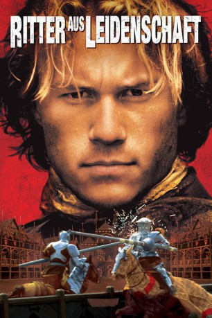

gesehen am 07.07.2015
gesehen am 07.07.2015Alternativ: A Knight's Tale gesehen am 07.07.2015
 
 IMDB-Wertung: 6.9 / 10
IMDB-Wertung: 6.9 / 10  Metascore:
Metascore: 
Abenteuerfilm, der im mittelalterlichen England spielt. Der junge William (Ledger) träumt davon ein Ritter zu werden, doch da er von niedrigem Stande ist, bleibt ihm sein Wunsch verwehrt. Er heuert als Knappe bei einem Ritter an und lernt das Rittershandwerk. Als dieser verstirbt, nimmt er die Chance war und schlüpft unter falschem Namen in seine Fußstapfen.
Jahr: 2001
Dauer: 132 Minuten
FSK: 12
Land: USA Studio: Columbia PicturesTonspuren: DD5.1 - ,
Untertitel:
Auflösung: 1080p (1920×816) Größe: 10854 MB
Genre: Action, Abenteuer, Liebe
Regisseur:  Brian Helgeland
Brian Helgeland
Drehbuch: Brian Helgeland
Soundtrack: Carter Burwell
Darsteller:
 Heath Ledger als William Thatcher
Heath Ledger als William Thatcher Rufus Sewell als Count Adhemar
Rufus Sewell als Count Adhemar Shannyn Sossamon als Jocelyn
Shannyn Sossamon als Jocelyn Paul Bettany als Geoffrey Chaucer
Paul Bettany als Geoffrey Chaucer Laura Fraser als Kate
Laura Fraser als Kate Mark Addy als Roland
Mark Addy als Roland Alan Tudyk als Wat
Alan Tudyk als Wat Bérénice Bejo als Christiana
Bérénice Bejo als Christiana Scott Handy als Germaine
Scott Handy als Germaine James Purefoy als Colville
James Purefoy als Colville Steven O'Donnell als Simon the Summoner
Steven O'Donnell als Simon the Summoner Nick Brimble als Sir Ector
Nick Brimble als Sir Ector Roger Ashton-Griffiths als Old Bishop
Roger Ashton-Griffiths als Old Bishop David Schneider als Relic Seller
David Schneider als Relic Seller David Sterne als Retired Knight
David Sterne als Retired Knight Karel Dobrý als Flanders King of Arms
Karel Dobrý als Flanders King of Arms Jan Nemejovský als Smithee
Jan Nemejovský als SmitheeDatei: X:\2001\Ritter aus Leidenschaft (2001, FSK12, 1920x816).mkv seit 18.02.2015
Festplatte: HD 1996-2002
 Es gibt insgesamt 102 Filme in der Gruppe '2001'
Es gibt insgesamt 102 Filme in der Gruppe '2001'